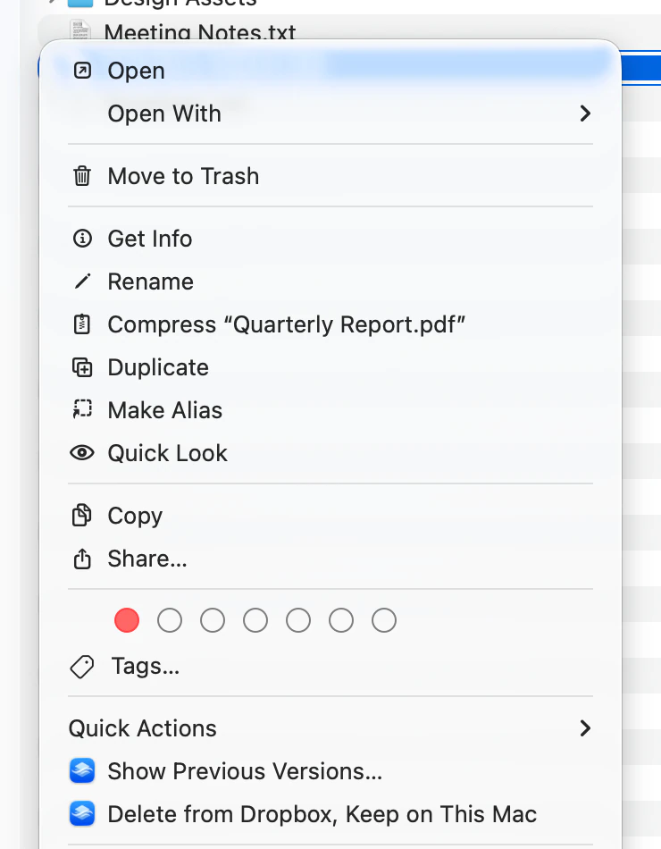

Dropbox keeps the earlier versions of a file for a while after you change it. If you saved something you didn’t mean to save, or an app wrote over a file badly, you can put an earlier version back without leaving Finder.
In Finder, Control-click the file.
Choose Show Previous Versions…

Each version is listed by the date Dropbox recorded it and how big the file was then, newest first. The one your Mac has now is marked Current.

Note: The command is only offered when exactly one item is selected, and only for a file — not for a folder, not for two files at once, and not for an item you have stopped syncing. With anything else selected it simply isn’t in the menu.
Select the version you want. The newest one that isn’t the current version is already selected when the window opens.
Click Restore…, then click Restore to confirm.
The file goes back to how it was at that version, on Dropbox and on every device signed in to the same account. Finder catches up a moment later, once the change comes back round.
Note: This is the one thing here you can’t undo by doing it again: what the file says now is replaced. The version you replaced is itself kept as an earlier version, so you can go back to it the same way.
A file Dropbox has no earlier version of — one you have never changed since adding it — reads Dropbox has kept no earlier version of this file., and the button at the bottom is Close rather than Cancel.
Versions follow a file through being renamed and moved, so a file you renamed still shows what it was before.
Note: The window shows at most ten versions, and
there is no way to page past them. How far back Dropbox keeps them depends on your Dropbox plan, but
a file saved often enough will have used up all ten within the day. zephyr revs reaches
further back — see Install the
zephyr command-line tool.